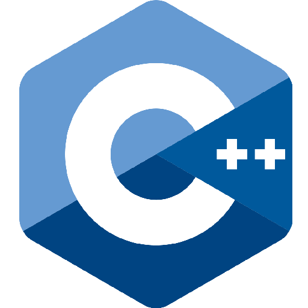
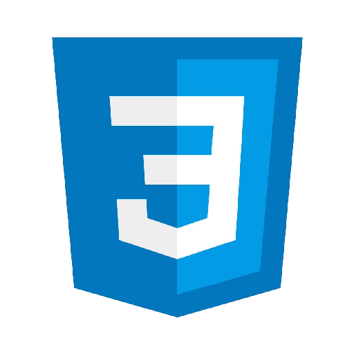
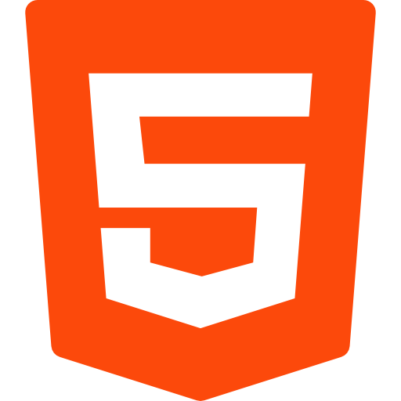
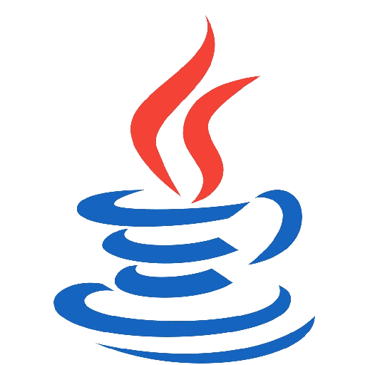
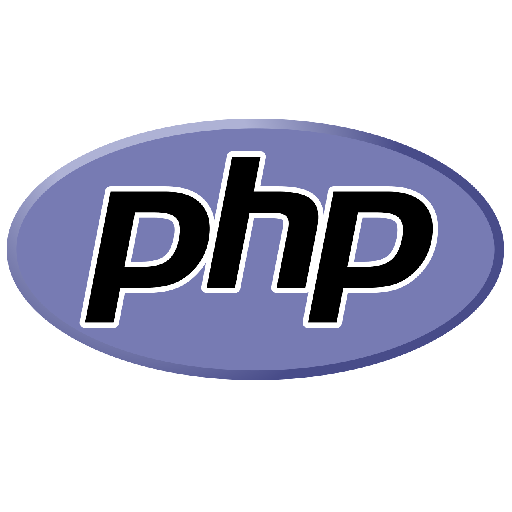
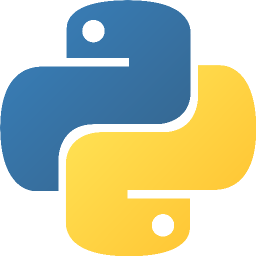
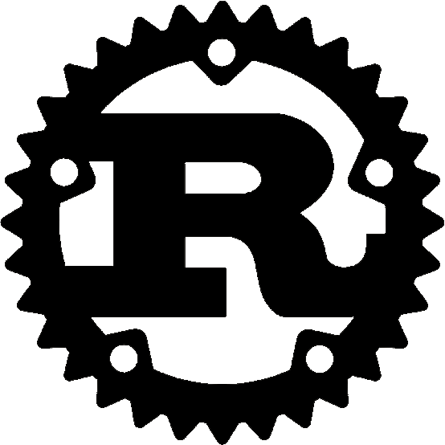
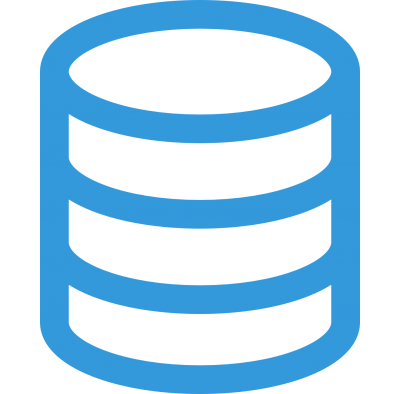
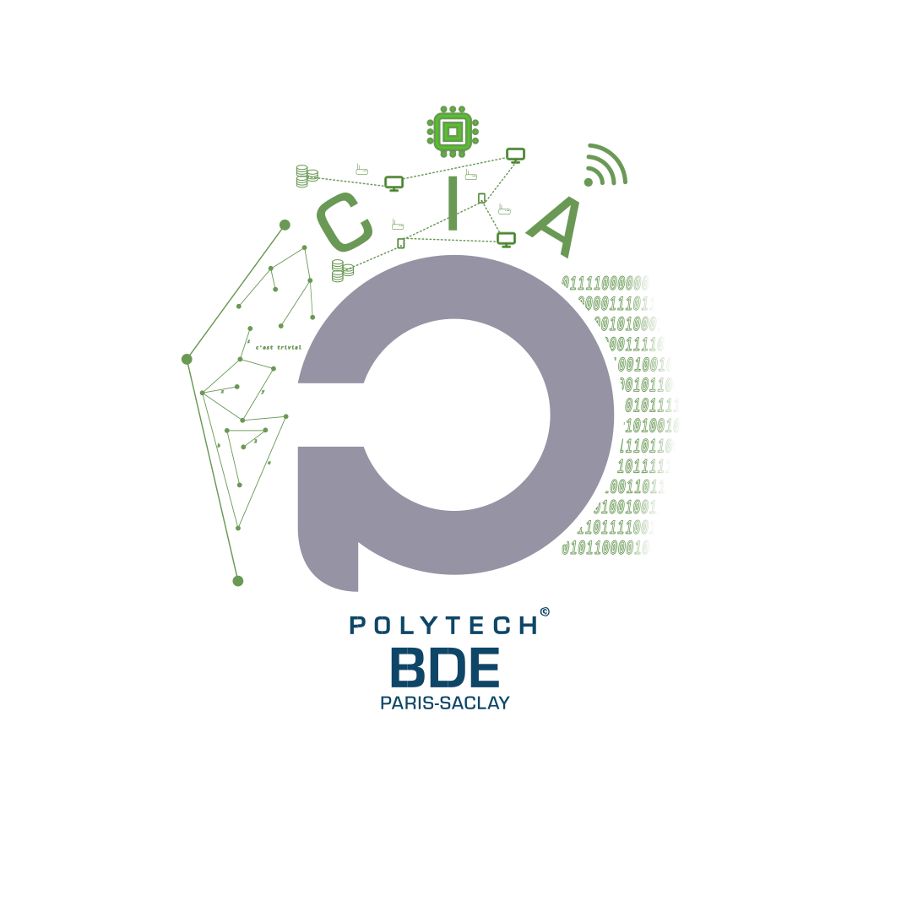

Sur le sujet des Langages de Programmation
Un hacker a injecté des scripts étranges dans la bombe. Identifiez la technologie utilisée avant qu'un dépassement de tampon ne vous efface de la matrice !
Ce module comporte un écran affichant un extrait de code ou une suite de mots-clés, ainsi que trois boutons.
Règles de Désamorçage
- Analysez les mots-clés ou la syntaxe de l'extrait affiché à l'écran.
- Utilisez le Tableau A (Mots-clés) en page 1 ou le Tableau B (Extraits de code) en page 2 pour identifier le langage correspondant.
- Attention aux pièges : certains mots-clés comme
echooumainsont partagés par plusieurs langages. Validez toujours avec les autres indices disponibles. - Appuyez sur le bouton du langage identifié pour valider l'étape.
- Désamorcez avec succès 3 étapes consécutives pour résoudre le module.
Tableau A : Identification des Logos
| Bash | Cpp (C++) | CSS | HTML | Java | JavaScript |
 |
 |
 |
 |
 |
| Kotlin | PHP | Python | Rust | SQL | CIA |
 |
 |
 |
 |
 |